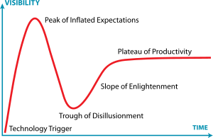
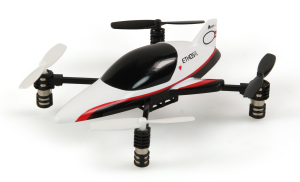

5 Thoughts From A Month With The Oculus Rift
Yep, one of the things that have been eating my time over the last month is the astonishing Virtual Reality headset, the Oculus Rift.
If you remember Virtual Reality the first time round, like I do, you’ll probably remember that it promised the earth and delivered sod-all but a headache and some extremely laggy polygons. Oh, and Lawnmower Man, but I’ve been trying to excise that from my brain for some time now.
The Oculus Rift, though, delivers.
It just goddamn works.
Put it on, select an application that works with it, and you’re transported to another world - smooth, fast, and convincing. I’ve now showed my Rift to nearly a dozen people, from hardcore techies to complete non-geeks, and all of them have been blown away by it.
Also, after about five minutes, most of them have felt violently ill. More on that below.
1. The Rift’s Not Just For Geeks
The Rift is completely not “just for geeks”. In all my demos, I’ve seen absolutely no difference in excitement between geeks and non-geeks.
{kind=link}
A theater producer friend whom I demoed it for got breathlessly excited about its potential for revolutionising the way we produce drama, films and theatre.
Other demos have shown it to be at least as intuitive and immediately understandable as the iPad. Indeed, I introduced one non-geek person to the iPad and the Rift within the same weekend, and she immediately found it as natural to interact with one as the other.
And there are a hundred uses for the Rift beyond games.
For example, one well-known app for the Rift transports you into a movie theatre - and the experience is extremely similar to an actual theater. I’m already planning a similar app for filmmakers, possibly even hooked into the preview function of Adobe Premiere. Want to be able to preview your movie on everything from an iPhone to an IMAX from the comfort of your edit suite? With the Rift, you can.
Architectural visualisation. Sculpture. Psychotherapy. Even just having the biggest damn word processor screen in the world. Like I said, this thing’s a game-changer.
2. It’s The Future

This thing’s clearly the future.
There’s absolutely no question in my mind - or the mind of anyone I’ve shown it to, as far as I can tell - that this thing’s the first major disruptive technology of the 2010s.
It’ll probably not be the last - real-time location tracking is poised to explode any day now, for starters, and there are all sorts of clever things I don’t understand happening in the biohacking world - but it’s going to be mind-blowingly big.
Having run a dot com during the dot com boom, the Rift puts shivers down my spine - it’s right at the 1994-ish “you know what, this Internet thing could have legs” stage.
It presents a completely, utterly new way to interact with things that don’t exist, a way that’s immersive, intuitive and flexible. Last time VR was suggested to be possible, it captured the public’s imagination immediately, and that excitement only died down when the reality really didn’t live up to the hype.
What’s happened since then is that VR has quietly progressed though the rest of the Gartner Hype Cycle and now, it’s ready for primetime.
And it’s just as big a deal as ever.
3. It’s surprisingly healthy
One thing that I’ve been really surprised by is the discovery that the Rift is actually good for my eyes.
Why? Well, I suffer from eyestrain on a pretty frequent basis - something that’s common to a lot of people who work with screens on a daily basis. It’s caused by the eyes having to spend hours converged on a single point about two feet in front of you, which is extremely unnatural for a species - humans - that evolved staring at the horizon or glancing around for predators, prey, and food.
The Rift doesn’t cause that problem. In fact, according to an optician I consulted, it could well be therapeutic for your eyes: it works the eyes in parallel, the most relaxed position, as if you were staring at the horizon. Once we’ve got some Rift-designed interfaces, moving to a Rift-based workflow could be a damn good move for your health.
Of course, there’s still the Rift-sickness to contend with. The first time you use a Rift, it’s almost certain that you’ll feel violently ill afterward - a phenomenon similar to travel- or seasickness. At one point early on, I overdid my adventures in the Minecraft Rift mod, and felt ill for almost 24 hours.
But everyone seems to rapidly improve. Both Becca (my girlfriend, who is an even bigger VR enthuasiast than I am) and I have gotten to the point now where we essentially never feel more than slightly queasy, even when bouncing down a virtual mountain driving a virtual truck whose virtual dodgy suspension I spent a full 15 minutes virtually cursing.
4. Powered By Drone And Phone Technology
It’s fascinating to watch how technology is cross-polinating and cross-fertilizing in 2013. The Rift has been made possible by the same advances that powered the creation of homebuilt Unmanned Aerial Vehicles, our motion capture suits, and the iPhone: small, high-resolution screens from the latter, and small, low-cost gyroscopes.
The latter used to be military technology, and extraordinarily expensive, but the rise of the Wii and the need for compasses in millions of mobile phones has forced the price down, to the point that I was able to built an entire lash-up motion capture suit out of them last year for less than $2,000. (Well, not just me - I worked with Martin Ling, the guy behind much of the software that powered musician Skrillex’s motion capture setup, on that one.). And like the mobile phone screens, they’ve got thousands of non-obvious applications, from self-righting vehicles like the Segway to, well, the Rift.
There’s more cool technology on the horizon than I can recall since the birth of the Internet right now, and it’s all cross-fertilizing.
5. It’s Wierdly Kind To Old Graphics
The most universally acclaimed demos for the Rift right now are Doom 3 and Half-Life 2. Now, you might notice those two games have something in common.
They’re both bloody old.
Both of those games were released in 2004, almost a decade ago. Looking at them on a regular computer screen, it’s pretty obvious; the graphics feel a bit flat, the textures are low-res, Doom’s much-touted shadows now look hard-edged and a bit ugly.
In the Rift, none of that matters.
Half-Life 2’s opening, where you walk through a totalitarian state’s train station menaced by faceless “Civil Protection Officers”, is awe-inspiring on the Rift. When you’re physically menaced by the guards, it’s terrifying - I’ve seen someone actually scream. And the short walk down a corridor with rooms where other unfortunates are being interrogated is brutally effective. I could imagine a similar virtual reality demo being an effective awareness-raising tool for human rights campaigners.
Scale’s awe-inspiring in a Rift, where it’s mundane on a screen. Characters feel far more real, and far more relatable. And watching someone try the Rift in Half-Life 2 is a lot like watching someone on acid - they spend a lot of time walking around mundane objects like rubbish bins muttering about how “real it is, man! I mean, look at the colour! Look at the sides!”.
Doom 3? Well, let’s put it this way: if they include that as a launch title for the consumer version, they’re going to have to offer a change of underwear with every purchase.
So what are you going to do with it?
I’ve got a LOT of plans for the Rift, and you’ll probably start seeing demos, concept video and more amusing stories of me making myself ill with bad rendering code coming out from me pretty soon. I’ve already started an information site for the Rift, where I’m writing up technical tutorials on how to get the bloody thing working with all the cool software and hardware out there.
Initially, I’m excited about using it for actors: there’s no reason it can’t work directly with the MVN mocap suits we use, and having actors able to see the virtual environment they’re acting in is a pretty mind-blowing concept. I may need to invest in a supply of sick-bags, though…
I’m also working on a virtual camera for the Rift, some tests of aiming cameras WITH MY FACE, the previously-mentioned preview suite, and more. Look for a post specifically about the Rift and filmmaking later this week or early next.
But for now, if you’ll excuse me, there’s a demon-filled corridor in Doom 3 that I’ve got to go be scared witless by…
Have you tried the Rift? What did you think? Let me know!